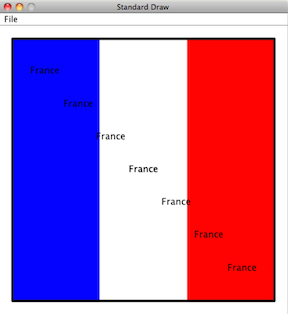

Studio 4: Flag Day
Warmup
- First, form a group.
- All but one member of your group should have this web page open so you can follow along and see the instructions as you work
- Plan to have one computer at which your team does its work. Initially, one of you will be in charge of typing at that computer.
- Throughout the studio, you should trade who is in charge of the keyboard. Before doing so, commit your work to make sure your work is saved
Overview
In honor of the upcoming UN Day, you will select (or design) a flag of your choice and create that flag using the drawing methods available in Sedgewick's library.
Here is the one I created:

But I am certain you will be much more creative!
The API for StdDraw will be very useful as you work on your flag.
Warning The book is missing some of the functionality that is in the Sedgewick library. For example, the book is missing the method that draws a filled rectangle, and that can be useful for drawing a flag.
See the link above for the full range of possibilities.
Procedure
##Design your country
-
What are the founding principles of your country?
-
What is your country's motto?
-
What major exports do you envision for your country?
-
Who might be valuable allies for your country?
-
Does your country have its own
Thinking through these questions may help guide the design of your country's flag and anthem.
##Design your flag
-
Visit the Flags of all Countries web site, and decide on a flag that your studio group would like to create for this studio.
Design (or pick) a flag that has at least 3 shapes on it. If you need to approximate something by a standard shape, such as a maple leaf by a circle, that's fine: just claim that your flag is somewhat abstract.
If you want to design your own flag, that's fine. Make sure it has at least 3 shapes in it. Try to come up with a cool name for your flag's country.
-
Open the studio4 package int he studios source folder, and open the
Flagclass.-
That class is currently empty except for the
main. -
Insert code that creates the flag of your choice.
Most of the drawing methods want the center of the object to be drawn, along with a radius, or a half-width, or a half-height. Be aware of this!
If you want colors, they are already in the Sedgewick libraries. If you start to type something like
sedgewick.then eclipse will fill in possibilities after the.which will include the colors at the top of that list.-
Frame your flag by surrounding it by a black rectangle of substantial thickness, (unfilled).
-
When done, allow your studio neighbors and TAs to admire its beauty.
-
##Display the name of your country
-
In the center of your flag, using a color that allows the text to stand out, write the name of your country on top of your flag.
-
In a (literally) moving display of patriotism, arrange for your program to print the name of your country repeatedly, from the upper-left-hand corner to the lower-right-hand corner.
For more drama, pause for a bit between each printing of the country's name, to allow for cheering from the crowd. Take a look at the
[show(int t)](http://introcs.cs.princeton.edu/java/stdlib/javadoc/StdDraw.html#show(int))method to achieve the pause.
##Compose an anthem for your flag
-
Find the
PlayThatTuneprogram in thebooksource folder, in thebook.ch1package. -
Run the program and make sure you can hear some sound when you play a given piece.
The music inputs come from the
musicfolder in your workspace. The program lets you choose any of the files in that directory, or you can navigate elsewhere if you wish. -
Based on what you see in the
Ascale.txtfile, design a piece that is your own anthem by specifying the pitches and durations.You can do this by modifying an existing file in the
musicfolder (for example, there is already aNational_Anthem.txtfile, so you can just modify that), or you can create a new text file in that same folder and place your composition there.If you are really unclear how to do this, no problem, you can just use one of the existing compositions.
Or, you could generate tones and durations randomly. Pick values that seem similar to what you see in the music files.
-
Try
PlayThatTuneand select your composition for playing. -
Once you like it, copy and paste the appropriate code from
PlayThatTuneinto yourFlagprogram so the anthem plays after your flag and text are drawn.The code you want is everything inside the main method; get help if necessary. When you run your code, you will have to select the anthem by hand. If you want the file to open without the user having to choose it, then replace the line
ArgsProcessor.useStdInput("music");with
System.setIn(new FileInputStream("music/National_Anthem.txt"));Eclipse will provide guidance about importing the right classes so this will work.
-
See if you can figure out how to get your anthem to play repeatedly.
This may not seem easy, but it builds on what you know about arrays and iteration.